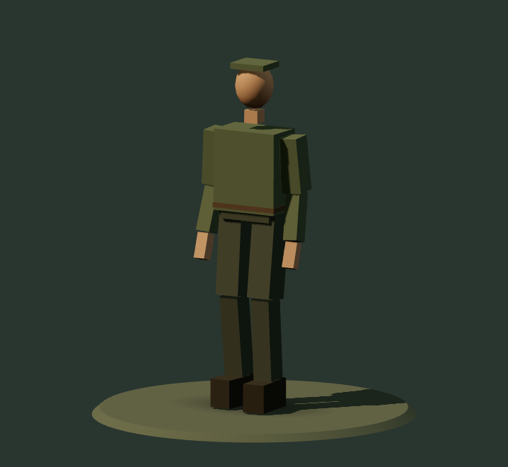
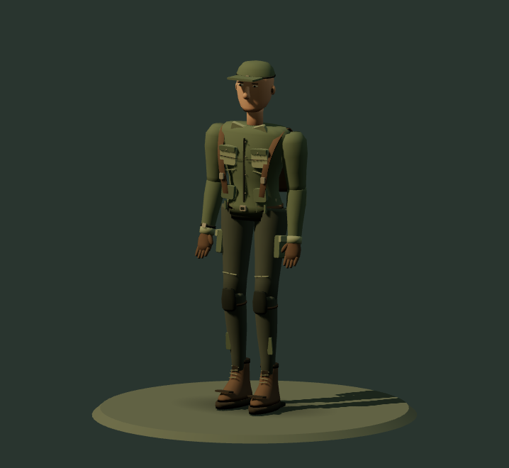
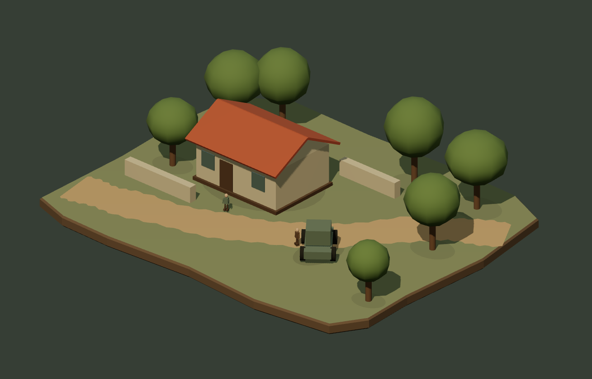
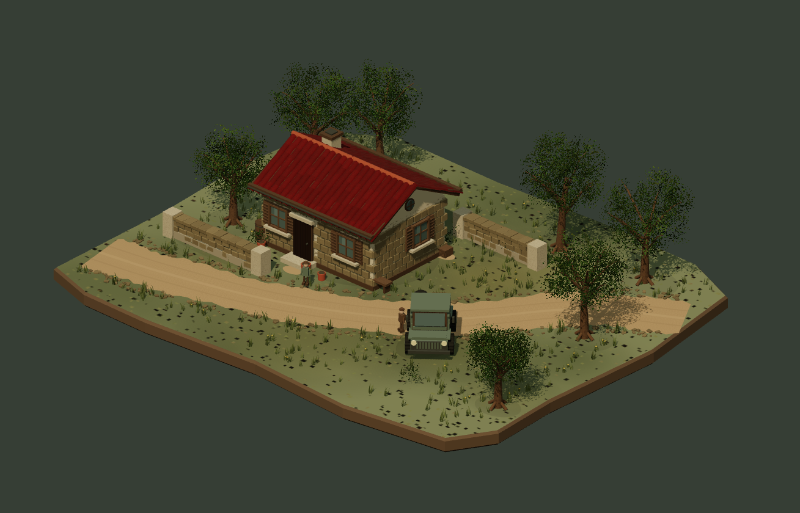
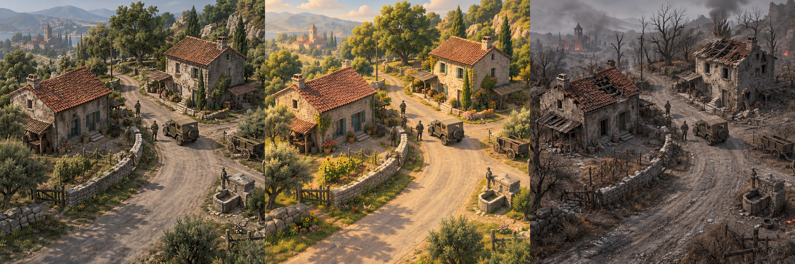

先读出人的姿态
头、肩、躯干与腿的关系要自然，站立与转身时都有明确的重心。放回场景后，人物与门窗、车辆保持可信的尺度。
ITERATION 03 / 人物专项
场景有了质感，人物也要有比例、身份与行动感。
保留前两轮，再从人物补足整体体感。
近看角色的造型与动作，回到中景观察它是否融入场景。
本轮对比说明保留场景的两个制作阶段，新增人物细化。聚焦人物后，可恢复中景检查它与建筑、道路的尺度关系；前两轮已独立存档。
01 / 人物近景对照
人物样板说明角色选择只切换近景，场景保留侦察兵与居民；人物配色与光照跟随上方风格。这是为本研究制作的原创程序人物，并非原游戏人物，仍需正式角色资产与材质制作，才能接近目标画面的完成度。
V3 · 侦察兵 · 站立 · 自然写实 · 暂停动作


两幅图直接保存自上方人物近景，镜头、身高参照与光照一致。这里比较本轮人物的制作层次；第二轮当时的人物请从完整存档回看。关节、面部与布料的自然感仍需继续提升。
头、肩、躯干与腿的关系要自然，站立与转身时都有明确的重心。放回场景后，人物与门窗、车辆保持可信的尺度。
侦察兵的军帽、背包与装备，居民的发型与日常服装，形成不同的轮廓。中景先看身份，近景再读衣着层次。
观察步幅、身体起伏与脚底接触地面的位置。动作要与行进速度相配，人物移动时才会像是在这片场景中活动。
02 / 保留场景的细化方法
模型、材质、布景和光影共同决定画面。
从简单方盒、平整屋顶开始
加入瓦片、屋檐、石砌门窗，让建筑边缘有节奏。
从大面积纯色表面开始
增加表面凹凸与粗糙度差别，让土路、石材与屋顶各有触感。
从整齐分开的物件开始
补足墙脚植被、杂物与车辙，让道路和建筑发生关系。
从基础照明与投影开始
强调接触阴影与侧光，把材质、厚度和空间层次连接起来。
03 / 第二轮画面留档
V2 · 自然写实 · 镜头 22 · 光向 25° · 暂停动态


两幅图保存自第二轮的实时场景，沿用同一镜头与光照条件。它们保留为本轮人物专项开始之前的对照；完整实现及其截图均单独存档。
04 / 保留视觉目标

这组图保留为造型、材质、布景与氛围的方向参考。它是 AI 生成的静态概念图，当前实时样板仍需继续提升，尚未达到图中的整体完成度。
05 / 留下过程，便于回顾
前一轮留档，新一轮继续。
保留场景细化，补足人物近景与中景中的造型、衣着层次和行走感。用同一镜头比较基础与细化人物，检查角色是否融入场景。
当前可体验 · 原创程序人物样板进一步引入精制模型和真实 PBR 材质，统一尺度、材质密度与光影标准，再扩展更多场景。当前尚未完成。
计划项 · 需要后续制作与验证